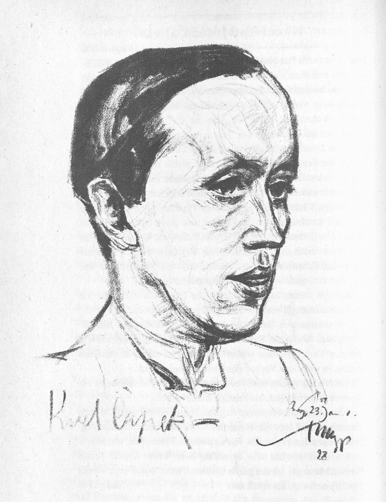
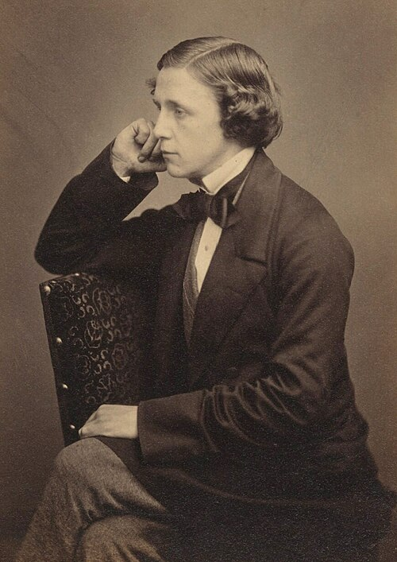
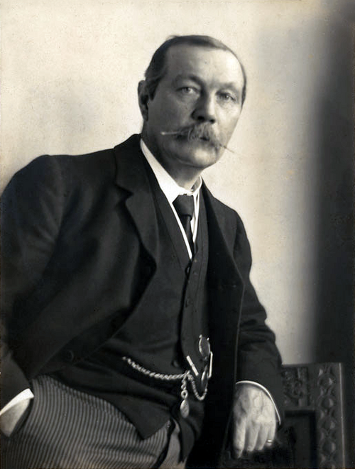
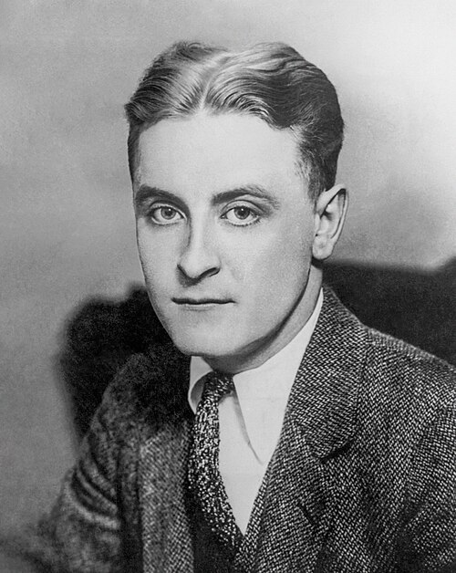
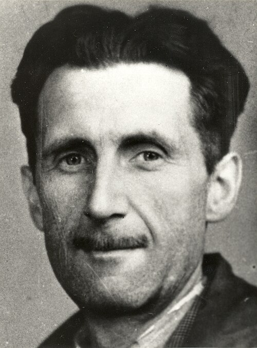
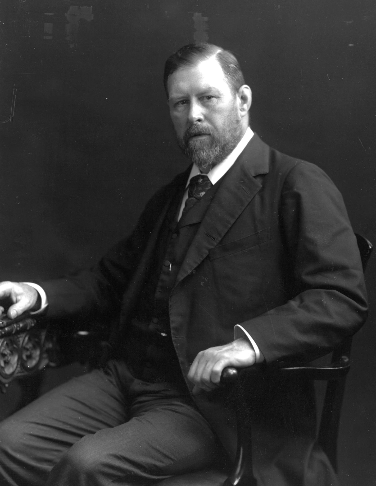

Kirjailijat
Tutustu tarinoiden tekijöihin. Löydä uusi näkökulma tuttuun teokseen.
Kaikki kirjailijat
17 kirjailijaa · Sukunimen mukaan

1832–1888 · Yhdysvallat
Omat haaveet kasvavat perheen keskellä.
Pikku naisia
Tutustu kirjailijaan

1775–1817 · Englanti
Tarkkoja havaintoja tunteista ja yhteiskunnasta.
Järki ja tunteet · Ylpeys ja ennakkoluulo
Tutustu kirjailijaan

1818–1848 · Englanti
Rakkaus ja katkeruus kaikuvat yli sukupolvien.
Humiseva harju
Tutustu kirjailijaan

1890–1938 · Tšekki
Mitä tapahtuu, kun ihminen unohtaa vastuunsa?
R.U.R. · Salamanterisota
Tutustu kirjailijaan

1832–1898 · Englanti
Kun sanat vaihtavat sääntöjä, maailma seuraa mukana.
Liisa Ihmemaassa
Tutustu kirjailijaan

1859–1930 · Skotlanti
Pienikin havainto voi muuttaa koko tarinan.
Sherlock Holmesin seikkailut · Baskervillen koira
Tutustu kirjailijaan

1812–1870 · Englanti
Suurkaupungin elämää, huumoria ja myötätuntoa.
Saiturin joulu
Tutustu kirjailijaan

1821–1881 · Venäjä
Ajatus joutuu koetukselle toisen ihmisen edessä.
Rikos ja rangaistus
Tutustu kirjailijaan

1896–1940 · Yhdysvallat
Loiston takana elää kaipuu johonkin menetettyyn.
Kultahattu
Tutustu kirjailijaan

1876–1916 · Yhdysvallat
Selviytyminen vaatii voimaa, mutta myös luottamusta.
Erämaan kutsu · Valkohammas
Tutustu kirjailijaan

1903–1950 · Englanti
Kenen sanoilla todellisuus määritellään?
1984 · Eläinten vallankumous
Tutustu kirjailijaan

1564–1616 · Englanti
Ihminen muuttuu puhuessaan ja toimiessaan.
Romeo ja Julia · Hamlet
Tutustu kirjailijaan

1797–1851 · Englanti
Luomisen vapauteen kuuluu vastuu luodusta.
Frankenstein eli uusi Prometheus
Tutustu kirjailijaan

1847–1912 · Irlanti
Kauhu rakentuu tiedoista, jotka eivät vielä sovi yhteen.
Dracula
Tutustu kirjailijaan

1828–1905 · Ranska
Uteliaisuus vie kartan reunan yli.
Maailman ympäri kahdeksassakymmenessä päivässä · Matka maan keskipisteeseen
Tutustu kirjailijaan

1866–1946 · Englanti
Yksi mahdoton oletus paljastaa tutun maailman.
Aikakone · Maailmojen sota
Tutustu kirjailijaan

1854–1900 · Irlanti
Säihkyvä lause voi kätkeä vaikean kysymyksen.
Dorian Grayn muotokuva
Tutustu kirjailijaan
Kirjailijaa ei löytynyt
Kokeile nimeä, teoksen nimeä tai teemaa, kuten satiiri.